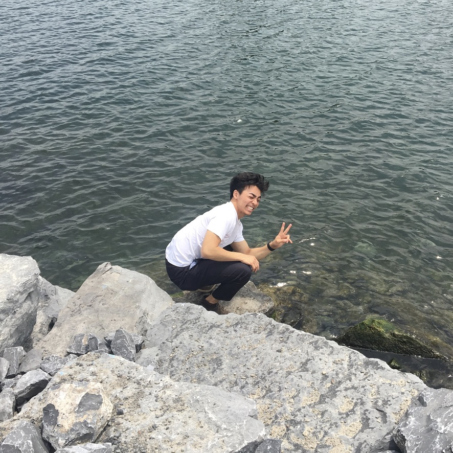

Taikan NakadaI am a physics graduate student at CUNY, and previously at Department of Physics at Emory University. I'm broadly interested in biophysics––applying computational and mathematical techniques to examine phenomena in biology. I started research on biomedical applications of graph neural networks I plan on using this as a brain dump of some things I read and learn. This page is still a work in progress. |
 |
ResearchI'm interested in biophysics, neuroscience, machine learning. |

|
Join Dr. Xie's Lab, 2020 Start research at Dr. Xie’s computational biology lab. Work is on graph neural networks |
ReadingsSummarizing papers and books I've read |

|
Recent readsreadings 2020-09-14 Humankind, Rutger Bregman |
Other ProjectsThese include coursework, side projects |

|
Lung Tumor DetectionProject 2020-09-01 Given a CT scan of a patient, identify voxels in the lung that show potential to be nodules. Grouped voxels are then classified as tumors or not with 3D Convolutional NN using PyTorch. Identified tumors are finally determined for malignancy. |
|
Design and source code from Leonid Keselman |